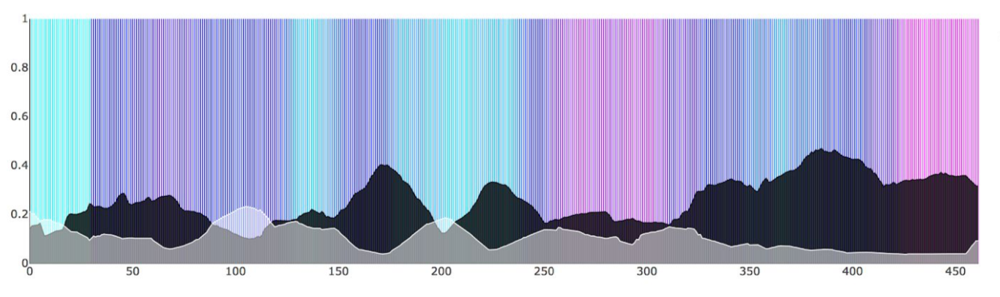

Modeling Color in Film
I always liked thinking about how color is used to generate various experieces in film. Based on this interest, a friend and I decided to try to model the change of color in feature films. Our model's output was a colour timeline like the one seen below. Each point in a colour timeline represent the average colour of the film at that point. The point approximately covers a 10 second window.
 (From the movie Insidious, (2010))
(From the movie Insidious, (2010))
The colour seen at each point in the timeline above is composed of a particular, hue, saturation and lightness. If these variables are separated and graphed independently then you get a timeline which looks like the one seen below.
 (From the movie Insidious (2010))
In this visualisation the hue is shown at the background of the plot, the saturation shown as a black line, and the lightness as a white line. Hue is a cyclical data type which makes it inappropriate in the line plot form that saturation and lightness take. Therefore we plot it as the background.
In our model, hue, saturation and lightness change slightly most of the time, and change greatly quite rarely. The small changes seeks to capture the gradual changes happening within a scene or arc of a movie. The large changes represent either a mood or scene change in the movie. We decided to have the concepts of a slight change and a major change because the scale of change and the frequency of these two are very different. For a scene change the hue might jump thirty values in the 360 values wide space between two frame, a change that might take thousands of steps with small changes. This is similar when looking at saturation or lightness.
The model’s state consists of:
- The average colour of the frame, broken down into hue (angle in degrees), saturation (from 0 to 1), and lightness (from 0 to 1)
- The steps_since_direction_change (integer)
- The saturation_gradient (angle in radians), which the saturation will follow
- The independent_lightness (from 0 to 1), which is combined with the inverse of saturation to calculate lightness
We did some validation of the model by comparing with indepedently chosen movies. Example of such comparison is below: the blue dots represent the controls and the red dots the generated movies.

Links to this entry:
time based